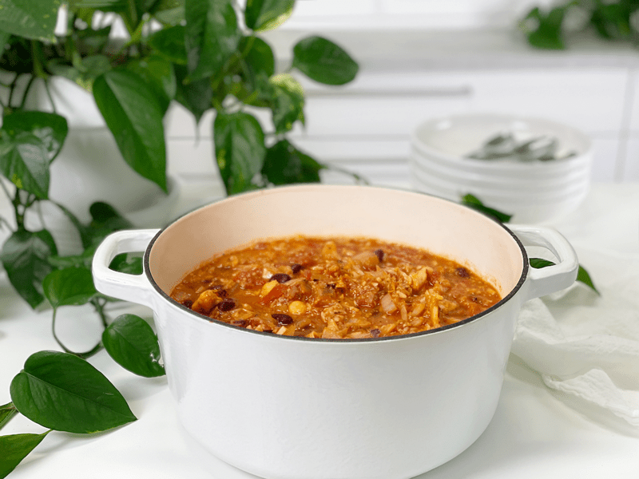
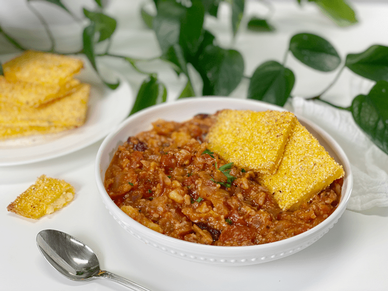

End of the Week Soup Challenge #1 | Leftovers | Oil-Free
Here I sit, Sunday evening, and I am flabbergasted that yet another week has slipped by (and so quickly). One of my dear friends, Lyn, has been text messaging me daily. She starts with, “Happy Monday” (or whatever day it is). To be honest, without her, I’d have no clue what day of the week it is. So thank you, sweet Lyn, not only for telling what day it is, but for the ray of sunshine you bring into my life.

Anyway, one of today’s kitchen creations was a large pot of soup. I am calling it End of the Week Soup. As the day progressed, I made my way to the fridge and swung the doors open…my eyes started to glaze over as I searched every nook and cranny of that fridge. I could hear my mom’s words embedded in my brain, “Are you trying to cool the house standing there with the doors open?”
“No, Mom,” I muttered.
Bringing my focus back to the present day, I noticed that I had a lot of leftovers from the week, which quickly became my inspiration. Today’s soup was made from: a container of raw shredded cabbage (its appearance was lackluster), some already steamed cabbage, about a cup of cooked brown rice, a small container of chopped white onions, a jar of raw marinara sauce, some leftover cooked polenta that had firmed up, and about a cup and half of kidney beans.
The only thing I added was a can of diced fire-roasted tomatoes, a little vegetable broth, and a spoon of vegetable bullion. I dumped everything in the pot, brought it to a gentle boil, then quickly turned it down to simmer for about an hour. About fifteen minutes before serving, I added the kidney beans, since I didn’t want them to get mushy.

The result–deliciousness! As you can see, it made a decent amount of soup. We had two bowls for dinner, I froze two pint jars for a later date, and put another container of it in the fridge for either tomorrow or Tuesday. No waste, saved money, saved time, and created nutritious meals for us. I challenge you to make a pot of End of the Week Soup for your family. If you do, please leave a comment below telling me about it. This just might become a weekly challenge for me. I made a batch of Crunchy Polenta Flatbread to go with it. The gentle flavor of the polenta paired beautifully with the acidic flavors of the soup.
I genuinely hope that you are all healthy as we weave our way through this global nightmare. My days have been full from morning till late evening. As I drift through my projects/work, I have been filled with so many mixed emotions: peace, joy, numbness, sadness, gratitude, sorrow, and a welcome renewed energy—each emotion weaving its way in and out of me as I keep my hands and mind busy. There have been moments where a real heaviness has hit my heart, as I am sure all of you have experienced. The pain, the suffering, the loneliness, the sickness, and the deaths. It’s all very surreal.
This pandemic has opened my eyes to my own life…exploring my heart, desires, and passions to much greater depths. It has taught me to be more content with what I have, more resourceful, less wasteful, and grateful for every deep, healthy breath I take. I always thought of myself as already being the ways mentioned, but this has definitely elevated my awareness to a whole new level.
What has this past week been like for you? How are you holding up? I would love to hear from you. Sending you all my love, prayers, and self-distancing hugs! amie sue
© AmieSue.com